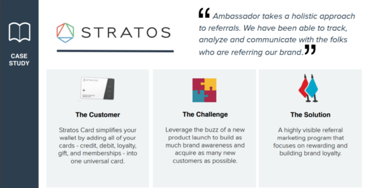
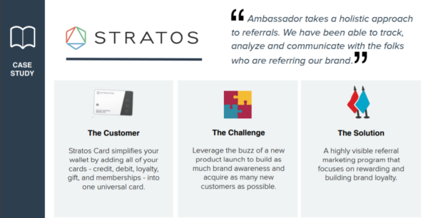

You must have heard about the theory ‘survival of the fittest’; you must also have heard a statement: “A smooth sea never makes good sailors”.
Both the ‘survival of the fittest’ theory and the statement above fit really well with the world of startups. And the world of startups is a violent one.
There are 150 million startups in the world today with 50 million new startups launching every year. On average, there 137,000 startups emerging every day. These are huge numbers by any standards. But the question remains, how many startups tend to survive the violent waves of change that have completely transformed the very nature of today’s startups?
In this particular blog post, I am going to elaborate about some of the biggest challenges being faced by small business startups.
Challenges faced by startups and how to owercome it
- Winning Trust of Customers

Customer is the king. And that’s absolutely right. Winning a customer’s trust is one of the most important challenges that businesses in general – and startups in particular – face today. With a highly satisfied and loyal customer base, startups can scale and make progress towards excellence.
Customers are the real force behind a startup’s success. Their word-of-mouth power and their presence on social media can give tech startups an edge against all the traditional businesses.
To win customers’ trust and loyalty, startups need to work aggressively to implement a customer-centric working philosophy, so as to enable them to succeed in their pursuit of attaining the height sustainable growth and progress they desire to achieve in this tech-savvy and challenging business world.
Well, this brings us to the end of this blog. It is a fact that there is no single stop solution to the surmounting challenges facing the startups in this age. You don’t have a magic wand either that can help you solve the so called challenges overnight.
In order to face and tackle the so called challenges of a violent business world, startups need to be resilient and focus on keeping their integrity in tact against all odds.
It can be overcomed by:-
- Create case studies and reports
Buyers often do intensive research before buying a product. A study on content consumption among buyers shows that 78% of buyers choose to read case studies to research a product. It also shows that 48% of buyers prefer case studies over every other content type for doing research before buying.
This means that you should create case studies as soon as you start getting customers.
Case studies are an interesting way to showcase business problems. They make your customer stories appear real and interesting. They also show practical examples of how you can help your customers achieve their goals.

- Offer something for free
Giving something away for free to customers is a powerful way to influence them to become loyal and paying customers.
A good way to do this is to use a lead magnet on your website to get subscribers by giving them something of value in exchange for submitting their email. This can be a free ebook, a checklist, limited-period access to premium products or courses, etc.
- Use the right tools
Startups can automatize trust-building by using helpful online tools on their websites. One example is to use a social proof app.
A social proof tool shows website visitors real-time information about other customers’ activities. This includes product purchases, registrations, and sign-ups. It will also automatically choose the best selling products and display a notification about it.
- Provide excellent customer service
Startups need to set up an excellent customer care service to respond to customers’ queries and problems.
It is important to respond to customers’ emails quickly and with relevant information. Handling their problems effectively and listening to them shows that you care and will help their business grow.
It can be challenging for a new business to provide great customer care when you’re first starting out. If you’re short on staff, consider outsourcing your customer service department. You can use live chat tools to manage your live chat, customer support, and social media.
Another key way to provide excellent customer service is to help them reach out to you using contact forms. You can use a free WordPress contact form on your site that will let you get feedback from customers easily.
- Use testimonials
Testimonials can diminish the sense of risk customers may feel about buying from a startup. They provide evidence of the personal experiences of other customers who have worked with you. 89% of B2B marketers c0nsider customer testimonials to be the most effective content marketing tools.
Ask for testimonials from your past or current customers and feature them on your website. This type of social proof makes building relationships and trust faster.
- Don’t make extravagant promises
We’ve all heard the phrase ‘under-promise and over-deliver’. You want to create reasonable expectations that you can actually fulfill, or even better, over-deliver. If you can exceed these expectations, you’ll create customer satisfaction and trust.
But if things go wrong, you will have customers with a negative experience. This can lead to your business developing a poor reputation which will be hard to recover from.
It’s a good idea to give reasonable expectations. Carefully document all agreements and points. Also, consider working with legal and financial experts to understand if your promises are doable.
- Fierce Competition
The corporate world is quite fierce. There is always a competition going on between the giants. Competition poses one of the biggest challenges for the survival of startup businesses. And if you have an online business startup, the competition gets tougher.
The competitive environment keeps the startups on their toes, as there is no margin of error available. Both B2B and B2C organizations always tend to feel the heat of the fierce competition. In order to survive in this competitive business environment that covers both traditional and online businesses, the startups need to play aggressively, and punch above their weight to gain the much needed recognition amongst the clusters of ever challenging and expanding businesses.

ACTION: know your customer:Most marketers are aware of their consumers’ purchase habits, which is beneficial to track. But there’s still a lot more data you can use to perfect your marketing strategies. Knowing your consumers allows you to develop a relationship with them and extend the customer lifetime beyond a handful of purchases.
Understand the Competition: To understand your competition, it is most important to begin by examining the marketplace. First, take a hard look at the things your competitor does. Does that company have intimate conversations with customers that lead to conversions? Do they have a unique angle to tell their story? Second, look to see what your competitor doesn’t do, and then try to fill in that part of the market.
- Unrealistic Expectations
Success does not come alone. It brings expectations with it. Most of the times, these expectations seem realistic, But in the real sense of the word, are merely unrealistic. This same concept holds true for young startups.
Startups tend to face challenges when they set ‘unrealistic expectations’ following a booming success. Remember, success is short-lived and expectations never end. This is where startups need to translate what the real expectations are? Sustainability is the name of the game. And sustainability requires consistent efforts.
In order to succeed in a competitive business world, startups need to have high but controlled expectations, keeping view of the resources available, the extent of growth potential, and other market factors as well.
ACTION: Finally, one of the most common unrealistic expectations for a business owner isn’t necessarily “My business will make me a millionaire.” Although there are a few people who believe they can accomplish far more than they can with their business, it is far more likely that you will tell yourself that you will fail whenever something minor goes wrong.
Instead, you must be willing to accept each up and down in your business and roll with the punches. Accept your failures, learn from them, and remind yourself that there is always room for improvement and development. Maintain a positive attitude, but be prepared for anything. That way, you’ll be prepared to face the upheavals of the startup world.
- Hiring Suitable Candidates
One of the most important factors that define organizational culture within a startup company is the synergy of the team. A team comprises of individuals with similar capabilities and identical focus. In order to develop a highly successful team culture, organizations in general – and startups in particular – need to hire suitable candidates.
There is a huge pool of aspiring individuals available. Selecting a suitable candidate that fits the job well enough is a peculiarly tricky task. It is one of the biggest challenges facing the startup businesses in this digital age. When hiring a suitable candidate, organizations must remember one golden rule: Birds of a feather flock together.

ACTION: Your first hire is critical, so take your time in finding the appropriate person. Look for people who have important experiences and share your beliefs. Create an open and honest business culture once you’ve assembled a team. Encourage your employees to communicate openly and honestly so that you can learn about their strengths and limitations. This may also assist you in dealing with any employee difficulties that may develop.
- Financial Management
Money begets money. Remember the fact that when income increases, the expenditures also increase. There is no doubt about it. One of the biggest challenges that startups face today relates to financial management.
It is a fact that small startups rely heavily on financial backups from the so called investors. At times, when there is a cash influx, small firms, most importantly startups tend to find it really hard to properly manage their finances, and they bog down against the pressure.
In order to address this kind of situation, startups need to play a safe and cautious hand, by keeping all the cards close to their chests. Taking help from a reputed financial consultancy firm may really help out in managing financial crises facing today’s startup businesses.

ACTION: You must understand all of the costs associated with your startup and ensure that your products or services are priced appropriately in order to make a profit. Make a cash flow forecast that predicts both your sales and your profit and loss. You can then forecast how much money is coming in and going out of your business.
- Cyber Security
This is the digital age. And surviving the challenges in this age requires small startups – especially the ones operating online – to be super agile to counter the so called online security threats. Hackers are everywhere, and they are going to take advantage of any loophole within the systems installed within a startup firm.
The rate of cyber crimes has increased dramatically during the past couple of years. The percentage is going to increase in the coming years as well. Startups that are active online do face online security threats. Be it unauthorized access to startup’s sensitive information, employee records, bank accounts’ information, or any other related information that is deemed important for the survival of a tech startup, they are at risk.
In order to safeguard the all important online data, startups need to have robust and military-grade security systems in place. A virtual private network (VPN) connection serves the purpose of protecting a startup’s information, and employee records, by offering the much needed encryption and data security to the startup’s employees, thereby restricting unauthorized access to organizational data over the web.I have only covered seven of the biggest challenges facing the startups in this age.
- Partnership Decision Making
Partnership is the essence of success. And this logic holds true for startups as well. In this ever-expanding and ever-changing digital era, where organizations need to battle hard for their survival, startups also find it difficult to find trustworthy partners. It’s really a big challenge for startups today. And as far as tech startups are concerned, stakes in partnership are much higher for them.
Going into a partnership pays great dividends for the startups, but they need to consider a variety of factors before making any decision to collaborate with another company working in the same ecosystem. To reap out maximum benefits out of a partnership, startup businesses should look for organizations that enjoy a sound presence within the market and a good reputation amongst the industry giants.
Customer is the king. And that’s absolutely right. Winning a customer’s trust is one of the most important challenges that businesses in general – and startups in particular – face today. With a highly satisfied and loyal customer base, startups can scale and make progress towards excellence.
Customers are the real force behind a startup’s success. Their word-of-mouth power and their presence on social media can give tech startups an edge against all the traditional businesses.
To win customers’ trust and loyalty, startups need to work aggressively to implement a customer-centric working philosophy, so as to enable them to succeed in their pursuit of attaining the height sustainable growth and progress they desire to achieve in this tech-savvy and challenging business world.
Well, this brings us to the end of this blog. It is a fact that there is no single stop solution to the surmounting challenges facing the startups in this age. You don’t have a magic wand either that can help you solve the so called challenges overnight. In order to face and tackle the so called challenges of a violent business world, startups need to be resilient and focus on keeping their integrity in tact against all odds.
It can be overcomed by:-
- Create case studies and reports
- Offer something for free
- Use the right tools
- Provide excellent customer service
- Use testimonials
- Don’t make extravagant promises
Buyers often do intensive research before buying a product. A study on content consumption among buyers shows that 78% of buyers choose to read case studies to research a product. It also shows that 48% of buyers prefer case studies over every other content type for doing research before buying. This means that you should create case studies as soon as you start getting customers. Case studies are an interesting way to showcase business problems. They make your customer stories appear real and interesting. They also show practical examples of how you can help your customers achieve their goals.
Giving something away for free to customers is a powerful way to influence them to become loyal and paying customers. A good way to do this is to use a lead magnet on your website to get subscribers by giving them something of value in exchange for submitting their email. This can be a free ebook, a checklist, limited-period access to premium products or courses, etc.
Startups can automatize trust-building by using helpful online tools on their websites. One example is to use a social proof app. A social proof tool shows website visitors real-time information about other customers’ activities. This includes product purchases, registrations, and sign-ups. It will also automatically choose the best selling products and display a notification about it.
Startups need to set up an excellent customer care service to respond to customers’ queries and problems. It is important to respond to customers’ emails quickly and with relevant information. Handling their problems effectively and listening to them shows that you care and will help their business grow. It can be challenging for a new business to provide great customer care when you’re first starting out. If you’re short on staff, consider outsourcing your customer service department. You can use live chat tools to manage your live chat, customer support, and social media. Another key way to provide excellent customer service is to help them reach out to you using contact forms. You can use a free WordPress contact form on your site that will let you get feedback from customers easily.
Testimonials can diminish the sense of risk customers may feel about buying from a startup. They provide evidence of the personal experiences of other customers who have worked with you. 89% of B2B marketers c0nsider customer testimonials to be the most effective content marketing tools. Ask for testimonials from your past or current customers and feature them on your website. This type of social proof makes building relationships and trust faster.
We’ve all heard the phrase ‘under-promise and over-deliver’. You want to create reasonable expectations that you can actually fulfill, or even better, over-deliver. If you can exceed these expectations, you’ll create customer satisfaction and trust. But if things go wrong, you will have customers with a negative experience. This can lead to your business developing a poor reputation which will be hard to recover from. It’s a good idea to give reasonable expectations. Carefully document all agreements and points. Also, consider working with legal and financial experts to understand if your promises are doable.
The corporate world is quite fierce. There is always a competition going on between the giants. Competition poses one of the biggest challenges for the survival of startup businesses. And if you have an online business startup, the competition gets tougher. The competitive environment keeps the startups on their toes, as there is no margin of error available. Both B2B and B2C organizations always tend to feel the heat of the fierce competition. In order to survive in this competitive business environment that covers both traditional and online businesses, the startups need to play aggressively, and punch above their weight to gain the much needed recognition amongst the clusters of ever challenging and expanding businesses.
ACTION: know your customer:Most marketers are aware of their consumers’ purchase habits, which is beneficial to track. But there’s still a lot more data you can use to perfect your marketing strategies. Knowing your consumers allows you to develop a relationship with them and extend the customer lifetime beyond a handful of purchases.
Understand the Competition: To understand your competition, it is most important to begin by examining the marketplace. First, take a hard look at the things your competitor does. Does that company have intimate conversations with customers that lead to conversions? Do they have a unique angle to tell their story? Second, look to see what your competitor doesn’t do, and then try to fill in that part of the market.
Success does not come alone. It brings expectations with it. Most of the times, these expectations seem realistic, But in the real sense of the word, are merely unrealistic. This same concept holds true for young startups. Startups tend to face challenges when they set ‘unrealistic expectations’ following a booming success. Remember, success is short-lived and expectations never end. This is where startups need to translate what the real expectations are? Sustainability is the name of the game. And sustainability requires consistent efforts. In order to succeed in a competitive business world, startups need to have high but controlled expectations, keeping view of the resources available, the extent of growth potential, and other market factors as well.
ACTION: Finally, one of the most common unrealistic expectations for a business owner isn’t necessarily “My business will make me a millionaire.” Although there are a few people who believe they can accomplish far more than they can with their business, it is far more likely that you will tell yourself that you will fail whenever something minor goes wrong. Instead, you must be willing to accept each up and down in your business and roll with the punches. Accept your failures, learn from them, and remind yourself that there is always room for improvement and development. Maintain a positive attitude, but be prepared for anything. That way, you’ll be prepared to face the upheavals of the startup world.
One of the most important factors that define organizational culture within a startup company is the synergy of the team. A team comprises of individuals with similar capabilities and identical focus. In order to develop a highly successful team culture, organizations in general – and startups in particular – need to hire suitable candidates. There is a huge pool of aspiring individuals available. Selecting a suitable candidate that fits the job well enough is a peculiarly tricky task. It is one of the biggest challenges facing the startup businesses in this digital age. When hiring a suitable candidate, organizations must remember one golden rule: Birds of a feather flock together.
ACTION: Your first hire is critical, so take your time in finding the appropriate person. Look for people who have important experiences and share your beliefs. Create an open and honest business culture once you’ve assembled a team. Encourage your employees to communicate openly and honestly so that you can learn about their strengths and limitations. This may also assist you in dealing with any employee difficulties that may develop.
Money begets money. Remember the fact that when income increases, the expenditures also increase. There is no doubt about it. One of the biggest challenges that startups face today relates to financial management. It is a fact that small startups rely heavily on financial backups from the so called investors. At times, when there is a cash influx, small firms, most importantly startups tend to find it really hard to properly manage their finances, and they bog down against the pressure. In order to address this kind of situation, startups need to play a safe and cautious hand, by keeping all the cards close to their chests. Taking help from a reputed financial consultancy firm may really help out in managing financial crises facing today’s startup businesses.
ACTION: You must understand all of the costs associated with your startup and ensure that your products or services are priced appropriately in order to make a profit. Make a cash flow forecast that predicts both your sales and your profit and loss. You can then forecast how much money is coming in and going out of your business.
This is the digital age. And surviving the challenges in this age requires small startups – especially the ones operating online – to be super agile to counter the so called online security threats. Hackers are everywhere, and they are going to take advantage of any loophole within the systems installed within a startup firm. The rate of cyber crimes has increased dramatically during the past couple of years. The percentage is going to increase in the coming years as well. Startups that are active online do face online security threats. Be it unauthorized access to startup’s sensitive information, employee records, bank accounts’ information, or any other related information that is deemed important for the survival of a tech startup, they are at risk. In order to safeguard the all important online data, startups need to have robust and military-grade security systems in place. A virtual private network (VPN) connection serves the purpose of protecting a startup’s information, and employee records, by offering the much needed encryption and data security to the startup’s employees, thereby restricting unauthorized access to organizational data over the web.I have only covered seven of the biggest challenges facing the startups in this age.
Partnership is the essence of success. And this logic holds true for startups as well. In this ever-expanding and ever-changing digital era, where organizations need to battle hard for their survival, startups also find it difficult to find trustworthy partners. It’s really a big challenge for startups today. And as far as tech startups are concerned, stakes in partnership are much higher for them. Going into a partnership pays great dividends for the startups, but they need to consider a variety of factors before making any decision to collaborate with another company working in the same ecosystem. To reap out maximum benefits out of a partnership, startup businesses should look for organizations that enjoy a sound presence within the market and a good reputation amongst the industry giants.